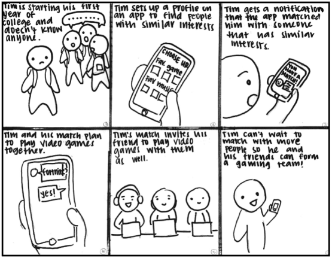
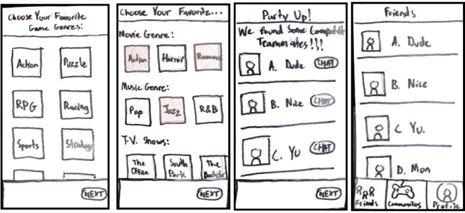
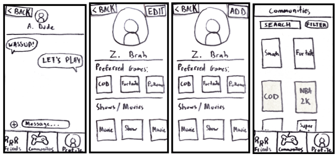
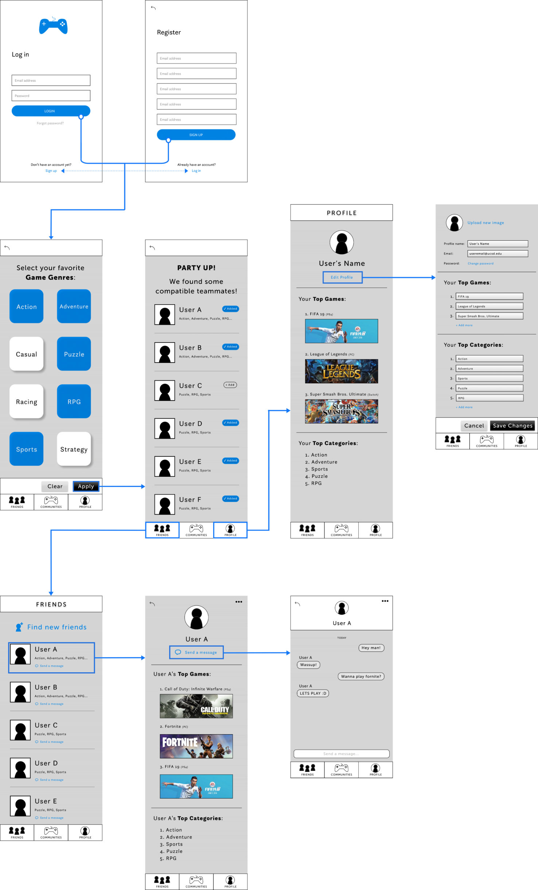
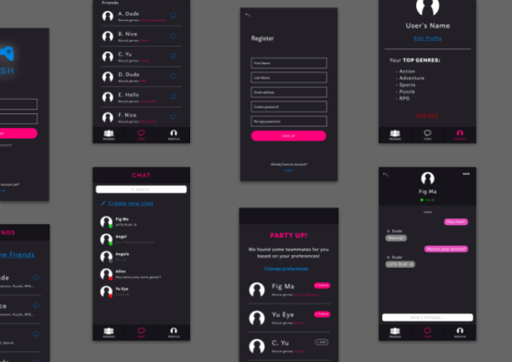

Role: Design Lead (Visual design, mockups, user flows)
Timeline: 3 months (January - March 2020)
Scope: Project management, UX research, UI design, Testing
In my Interaction Design course at UC San Diego, I worked with a team of 3 on a 10-week project in which we created a mobile web application. Throughout the course, we learned how to design a user-centric product with effective organization and presentation of information.
Our team’s goal for this project was to develop an app that could help video game players and improve the quality of the relationships they make online by encouraging them to be more social with one another.
As the design lead, I was responsible for developing low- to high-fidelity mockups, sketching, optimizing user flows, and the overall visual design of our application.
In order to figure out our problem scope and better help our users, we first had to do some user research and needfinding! This was the first step in our design process.
We conducted a small experiment in which we observed participants while trying to complete a task: attempt to play video game with a friend. We wanted to observe what methods our participants would use, and any breakdowns of each method.
In order to complete the task of playing video games with a friend, participants had to outsource several different online platforms (e.g., Twitter, Discord, text, etc.) to see if any of their friends were available to play. When participants were unable to complete the given task, they opted to find a new friend online that they can play with. Not only did this take longer, the interactions with these new “friends” were often short and shallow. After observing and interviewing 3 participants, we found that our users needed:
1. A fast and reliable way to find new friends to play with.
2. A way to check if their friends are available to play.
We wanted to use these needs to help inform our decisions along the entire design process.
Alexus is a 28-year-old product designer. She wants to play a popular 2-player game but her friends aren’t interested in video games. She’s hardly ever played video games in the past so she feels strange jumping into video games at her age. She wishes there was an easier way to find friends to play her game with.
Ethan is a college student struggling with social anxiety. He doesn’t have many friends yet but he’d like to meet some new people with common interests, like first-person shooter (FPS) video games. He wishes there was a simple way to meet people who play the same games as him.
In order to better understand our users and address their needs, we created storyboards that show the user’s journey and their possible motivations for using our app.
Our team created a paper prototype to visualize our initial UI design of Bash. This helped us to get an idea of the general functionality and information architecture of our app.
 During our first phase of user testing, we had a participant test our paper prototype shown above. Our goal of this phase was to identify any major usability issues with our UI so that we can address them before moving onto our higher-fidelity prototypes. The participant critiqued our prototype by using each of the 10 Usability Heuristics for UI Design by Jakob Nielsen.
The criticism was very useful in that it allowed us to make a list of our more significant UI issues so that we could iterate and pivot towards an improved design. For example, the participant mentioned uncertainties about the “NEXT” button shown below (left picture). They didn’t understand what would be “next.” They also felt there should have been a chat button next to friend names (right picture).
This is the complete list of changes we had planned to make based off of multiple heuristic evaluations and after looking at other apps’ with successful user interfaces:
1. Provide more description of certain features and add help and documentation features.
2. Improve app navigation (e.g. Include taskbar at the bottom with main features).
3. Error prevention (e.g. Add pop-up window that confirms when users save their profile or try to
exit without saving their profile).
4. Be more descriptive of what window the user will go back to when pressing the “Back” button.
5. Gray out the “Save Profile” button if it’s already been saved or no changes were made.
6. Specify if new screen transitions left-to-right, right-to-left, pop-up, etc.
7. Show keyboard/text options when user needs to type something in.
8. Include a chat icon next to friends’ names to easily chat with them.
From here, our team had a much better understanding of what parts worked and didn’t work with our UI. After identifying our paper prototype’s major problems and brainstorming potential solutions, we decided that our next step would be to clean up our design and see what it looked like on a mid-fidelity mockup on Figma.
Below is our mid-fidelity mockup. We wanted to implement changes from most of the feedback we received from our first user testing phase above. We planned to conduct more user testing phases, so we just wanted to have the general interface roughly laid out for now. That way, we could iterate future versions more easily.
We were now ready to begin our next user testing phase. This time, we had participants complete a set of tasks while using a semi-functional version of our app. We had our participants “think aloud” their thought process, so we could observe and understand any usability issues and behavior patterns. We all followed the same testing procedure in order to avoid experimenter bias.
Once again, there was a lot to benefit from user testing. A pattern that we observed was that the participants struggled to click on certain buttons. This was most clear when they attempted to add new friends. As a result, we decided to increase some text and button sizes in our next mockup, as well as finalizing our visual brand.
For our final user testing phase, we used Google Analytics to run A/B testing on participants who matched our target demographic: people interested in video games. We wanted to compare the two designs below and see which one would result in users adding more friends. We believed that users would be more likely to add another user if they were to see mutual genres rather than all genres because they would notice more in common with them. The difference between the two designs was measured using a chi-square statistical test.
Results:
From the Google Analytics data and chi-square test, we found that there was no conclusive evidence that the A/B designs were affecting our measured variable. In other words, we couldn’t yet assume that our B design was better or worse than our A design. Users might prefer one over the other, but qualitative information would be necessary before we make a conclusion.
Ultimately, our team completed the app with full functionality and deployed it on Heroku. Being my first design project, this experience taught me a lot about the basics of web development and the user-centric design process. I learned that communication and finding a middle ground is important when working with a team. Our team had a variety of different skill sets, which seemed to be a problem at first. We divided and assigned tasks to each team member based on their skill set. This allowed us to make up for each others' shortfalls and complete our goals consistently as a team.
A special thanks to my amazing team members,
ANGEL OBIE
Technical Lead
- HTML + CSS
- Paper prototypes
- A/B testing
- Project management
ANGELA QUIAMBAO
Technical + Evaluation Co-Lead
- HTML + CSS
- Sketching
- Storyboarding
- Project management